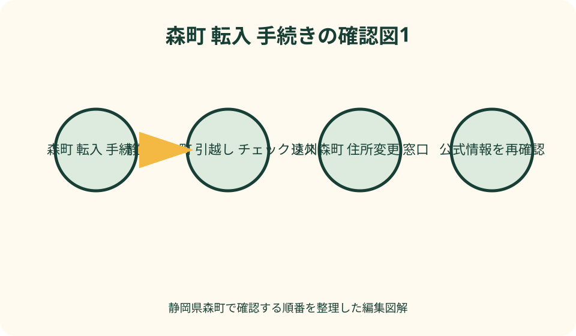
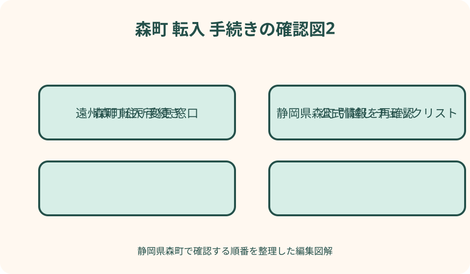

転入・引越し手続｜最終確認 2026-08-10
静岡県森町へ転入・引越し｜期限・窓口・持参物の手続チェック
静岡県森町へ引越す時は、段ボールの準備と行政手続を同じ予定表に入れると混乱します。旧住所地で行う転出、実際に森町で暮らし始めてから行う転入、同時に確認するマイナンバーカード、対象者だけが行う国民健康保険・国民年金・子どもの手続、その後の免許・車検証・銀行等の住所変更へ分けます。水道は鍵を受け取っただけで使用開始になるとは限らず、ごみは住所だけで収集場所が分かるとは限りません。本記事は2026年8月10日に確認した公式情報を基に、引越し日の三週間前から三週間後までの時系列を作ります。
引越し日をD日にして一本の表を作る
予定表の中央へ、荷物を運ぶ日ではなく森町で実際に住み始める日をD日として置きます。賃貸開始日や鍵受取日と同じとは限りません。
左側に旧住所地、中央に森町役場、右側に学校・警察・車・民間契約を並べます。窓口名と手続主体を一列に混ぜません。
家族ごとに、氏名、生年月日、旧世帯主との続柄、新世帯主、マイナンバーカード、保険、年金、学校、車の有無を一覧にします。
期限は『引越し前』『引越し後』だけでなく、起算する日と公式確認日を記します。個別事情で異なる期限は担当へ質問します。
D−21日：旧住所地の窓口一覧を作る
転出届のほか、国保、介護、医療受給、児童手当、保育、学校、印鑑登録、水道、ごみ等に返却・精算・受取書類がないか確認します。
勤務先の健康保険に入る人は、自治体国保の人と必要手続が同じではありません。家族全員の保険者名を資格情報から確認します。
小中学生がいる場合、現在の学校へ転校日を早めに伝え、在学・教科書等の引継ぎに必要な書類と受取時期を聞きます。
旧住所地でしか受け取りにくい証明や印鑑登録証明が必要かも、賃貸・車・勤務先の手続先へ事前に確認します。無目的に大量取得しません。
D−14日：転出届を提出する方法を選ぶ
旧住所地の市区町村が案内する届出期間、窓口、郵送、オンラインの対応を確認します。森町の転出案内を旧自治体の条件へ流用しません。
マイナンバーカードがあり利用条件を満たす人は、マイナポータルから転出届と森町への来庁予定連絡を行える場合があります。
デジタル庁は、オンライン手続で転出元への来庁が原則不要になる一方、転入先窓口での転入届は必要と案内しています。
カードの有効状態、電子証明書、対応端末、暗証番号、申請状況を確認します。送信画面を閉じただけで処理完了とは考えません。

転出証明書とオンライン経路を混ぜない
窓口・郵送等で転出証明書が交付される経路と、カードを使う特例転入・引越しオンラインサービスでは、森町へ持参する中心資料が異なります。
紙の証明書を受け取ったら、氏名、転出予定日、新住所を確認し、カード類と別の透明袋へ保管します。引越し荷物へ入れません。
オンライン経路では、対象者全員のマイナンバーカードまたは住基カードを森町窓口へ持参するよう町公式が案内しています。
申請後に予定日や新住所が変わった時は、自己判断で書き換えず、旧住所地と森町のどちらへ連絡するかを確認します。
D−10日：水道の開始届を先回りする
森町公式では、新たに水道を使う時は所定の給水届が必要で、電話や問い合わせフォームだけでは受け付けないと案内しています。
同ページは届出期限を閉開栓日の前の開庁日と示していますが、年末年始や不備を考え、入居日が決まり次第、最新様式と提出方法を確認します。
賃貸では所有者・管理会社が手配する場合もあります。使用者名、開始日、請求先、口座、メーター番号、開栓状態を重複なく確認します。
井戸、簡易な給水設備、公共下水道、浄化槽等は別の管理が加わります。水道開始届だけですべての給排水準備が完了するとは限りません。
D−7日：役場持参袋を家族別に作る
共通袋には転出証明書または対象カード、来庁者の本人確認書類、新住所の正式表記、連絡先、委任状候補を入れます。
カード保有者袋にはマイナンバーカードや住基カードと必要な暗証番号の確認メモを入れます。暗証番号そのものをカードへ貼りません。
対象者袋には国保等の資格資料、年金番号が確認できる物、学校書類、子ども医療、児童関係、介護・障害等の書類を分けます。
国外からの転入、外国籍、代理人、別世帯への転入、世帯合併等では追加資料があり得ます。森町住民係へ事情を具体的に伝えます。

新住所は部屋番号と世帯主まで決める
賃貸借契約書、売買引渡書、郵便受け、建物表示で新住所を照合し、集合住宅名と部屋番号を省略せずメモします。
同じ住所に既存世帯がある、親族宅へ同居する、二世帯で暮らす場合、世帯をどう届けるかは生活実態を説明して窓口へ相談します。
転入日、引越し荷物到着日、契約開始日を混同しません。転入届には実際の居住に関する日付を正確に伝えます。
郵便・配送用住所と地番の表現が異なる物件では、役場で使う住所を確認します。不動産広告の表記だけを写しません。
D日：鍵・メーター・設備を記録する
鍵を受け取ったら、本数、玄関、勝手口、倉庫、郵便受けを確認します。貸主・管理会社との受渡記録を残します。
電気、水道、ガスのメーターを、番号と指示値が読める範囲で撮影します。開栓や安全確認を無断で操作しません。
傷、漏水、排水、設備停止、ごみ残置、郵便物を確認し、入居前写真を管理会社等へ指定方法で共有します。
町内会名、ごみ集積所、通学路、緊急車両の進入、夜間照明を近隣・管理者へ確認します。地図アプリだけで場所を決めません。
D〜D＋14日：森町で転入届を出す
森町公式は、町外から転入した人に、引越しが完了した日から14日以内の転入届を案内しています。窓口の開庁日を逆算します。
必要な物として、転出証明書、来庁者の本人確認書類、該当者のカード、場合により委任状等が案内されています。最新ページで再確認します。
マイナポータルで来庁予定を連絡していても、転入届自体が受理済みという意味ではありません。森町の窓口へ行きます。
届出後に住民票等を何通取るかは、免許、車、勤務先、学校、金融機関の要件を確認して決めます。提出先ごとの記載事項も聞きます。
窓口で確認する質問を一枚にする
受付時に、同日に回れる担当、別日になる手続、追加資料、交付物、後日郵送物を質問し、一覧へ受付印または確認日を残します。
転入届、カード、国保、年金、子ども、学校、介護、印鑑登録は対象者と担当が異なります。一つの番号札ですべて終わると期待しません。
通知や受給資格には基準日・所得・扶養・前自治体の情報が関わる場合があります。転入しただけで個別資格が自動確定するとは断定しません。
不足資料があれば、郵送、再来庁、オンライン、前自治体照会のどれが可能かと期限を聞きます。『後で』ではなく次の行動へ変えます。
マイナンバーカードは全員分を確認する
森町公式は、カード保有者について転入時の持参、継続利用、電子証明書の住所変更を案内しています。子どものカードも忘れません。
カード表面の住所追記、署名用電子証明書、利用者証明用電子証明書は同じ機能ではありません。どこまで更新されたかを確認します。
暗証番号を忘れた、追記欄が満欄、カード期限切れ、氏名も変更、本人が来られない等では、その場で完了しない場合があります。
代理人がカードを持参する場合、町公式はすぐにできない手続があり、照会回答書を用いる流れも示しています。事前に条件を聞きます。
印鑑登録は必要な人だけ行う
旧住所地の印鑑登録は転出に伴い扱いが変わります。森町で印鑑証明が必要な人は、新規登録の方法を住民係へ確認します。
転入届と同時に申請する場合、森町公式は登録する印鑑の持参を案内しています。本人・代理、顔写真付き確認等で手順が変わる可能性があります。
住宅・車・金融の契約でいつ印鑑証明が必要かを先に聞き、必要部数と発行日要件に合わせます。使途のない取得を避けます。
電子契約や認印で足りる手続もあります。『引越したら全員が実印登録』という一律のチェックにはしません。
国民健康保険は加入対象から確認する
勤務先の健康保険、被扶養者、国保組合、後期高齢者医療等では、森町国保への加入対象が異なります。保険名と資格日を確認します。
森町公式は、他市町村から転入した国保対象者などの異動届を14日以内に行うよう案内し、マイナ保険証利用者も手続が必要としています。
資格確認書、資格情報、保険脱退連絡票、マイナンバー連携による添付省略の可否は人ごとに違います。持参物を国保年金係へ聞きます。
受診予定が近い人は、資格情報が反映するまでの受診方法を窓口と医療機関へ確認します。この記事は医療費の扱いや資格完成を保証しません。
国民年金は被保険者区分を確認する
自営業・学生等の第1号、厚生年金加入者、被扶養配偶者、年金受給者では、住所変更時の連絡先や必要届出が同じではありません。
日本年金機構は、マイナンバー収録状況や住民票と実住所の違い等により住所変更届が必要な場合を案内しています。
第1号被保険者は町国保年金係、厚生年金加入者は勤務先、被扶養配偶者は配偶者の勤務先へ、本人の区分を示して確認します。
退職と転入が近い時は、健康保険と年金の資格日が別に動きます。退職証明等をそろえ、住所変更だけの手続として終わらせません。
子どもの手続は年齢別に分ける
乳幼児、小中学生、高校生等で、児童手当、子ども医療、健診・予防接種、保育・幼稚園、学校、就学支援の確認が異なります。
前自治体の受給者証や接種記録、母子健康手帳、所得関係、在園・在学書類を整理し、返却する物と森町へ持参する物を分けます。
申請期限や資格開始日は制度ごとに違います。転入届と同じ14日と一括せず、健康こども課・教育委員会等へ個別に確認します。
保育所等は住所変更だけで入所が決まるとは限りません。空き、申込期、就労証明、慣らし保育を転入前から相談します。
小中学校は住民係から教育委員会へ進む
森町公式は、役場住民生活課で転入手続を行った後、教育委員会へ行き、転入通知書を指定校へ提出する流れを案内しています。
旧学校から受け取る在学証明、教科書関係、成績・健康等の書類は、封を開けない指示があるかも含めて学校へ確認します。
指定校は住所を基に定められ、指定校変更には基準と申立てがあります。希望だけで変更できると断定せず、学校教育課へ相談します。
初登校日、通学路、バス、自転車、給食、制服、学用品、アレルギー、支援、緊急連絡を学校と一項目ずつ決めます。
介護・障害・医療の継続資料を確認する
介護保険、障害者手帳、自立支援医療、各種受給者証、指定難病等を利用する人は、転出元の証明と森町での窓口を事前確認します。
要介護認定やサービス事業者の引継ぎには、行政手続とケア提供の両方があります。居宅支援等へ引越し日を早く共有します。
新しい受給者証や資格が即日交付されるとは限りません。通院、薬、訪問、福祉用具の空白を避ける連絡順を担当と作ります。
個別の資格や自己負担は、年齢、所得、保険、認定等で変わります。本記事から継続可否を判断しません。
運転免許は保有形態を確認して更新する
免許証のみ、マイナ免許証のみ、二枚持ちでは住所変更に使う書類とワンストップの扱いが異なります。静岡県警公式で保有形態別に確認します。
住所変更後のマイナンバーカード、新住所を確認できる資料、委任状等の要件を確認し、対応する警察署・分庁舎・免許センターへ行きます。
県警公式の受付は平日中心で、窓口ごとに時間が示されています。古いブログの受付時間を使わず、訪問日に再確認します。
マイナ免許証の住所変更ワンストップは利用申請等の条件があります。役場でカードを変えただけで全員の免許情報が変わるとは限りません。
車検証・軽自動車・保管場所を分ける
普通車等の登録、軽自動車の検査情報、運転免許、車庫、税、保険は別制度です。免許の住所変更一件で車の変更が全て済むわけではありません。
普通車等は中部運輸局の登録案内、軽自動車は軽自動車検査協会の住所変更案内を、車検証を手元に置いて確認します。
ローン・リースで使用者と所有者が異なる場合、所有者の同意や指定手続が関わることがあります。販売店・会社へ先に連絡します。
保管場所、ナンバー、税、任意保険、自賠責、ETC、駐車契約も確認します。期限と管轄は車種・住所・契約で異なるため個別照会します。
水道開始後は漏水と請求先を確認する
使用開始日にメーターと蛇口を確認し、全て閉じてもメーターが動く、濁り、異音等があれば自己修理せず管理者・上下水道課へ連絡します。
給水届の使用者、所有者、請求先、開始日、支払方法が希望どおりか、初回通知で確認します。住所表記の省略にも注意します。
公共下水道接続済みか、浄化槽か、くみ取り等かを貸主・売主へ確認し、点検・清掃・使用開始の担当を決めます。
水道が出ても給湯器、井戸ポンプ、浄化槽、凍結防止、排水設備が正常とは限りません。設備ごとに確認日を残します。
ごみは地区カレンダーと集積所を確認する
森町公式は年度の家庭ごみ分別表と資源・埋立ごみ収集カレンダーを公開しています。引越した年度の最新版を入手します。
住所の地区と収集区分、燃やせるごみの曜日、資源・埋立の指定日、指定袋、朝の時間を公式表で確認します。
実際に使う集積所は、管理会社、貸主、町内会、近隣等へ利用可否を聞きます。最も近い集積所へ自由に出せるとは限りません。
段ボール、大型家具、家電、パソコン、危険物、引越し事業ごみは通常集積と分けます。持込先・回収方法を品目ごとに確認します。
郵便と民間住所変更を二段階で行う
日本郵便の転居届は旧住所宛郵便の転送手段ですが、銀行、保険、勤務先等の登録住所を変更する手続の代わりではありません。
郵便は登録に日数を要すると公式案内があるため早めに提出し、転送期間と対象外郵便を確認します。旧居の郵便受けも適切に管理します。
第一段階は勤務先、銀行、証券、生命・損害保険、携帯、インターネット、電気、ガス、通販等の重要契約です。
第二段階は会員、定期配送、寄付、資格団体、病院、学校外活動、家族連絡先です。請求書やメールから旧住所登録を三か月追います。
平日に行けない時は手続別に代案を聞く
転出は条件を満たせばマイナポータルや郵送を使える場合がありますが、森町の転入届は来庁が必要と町・国公式が案内しています。
転入届の代理は本人・世帯関係、委任状等で扱いが変わり、カード更新が同日に済まない場合があります。代理人の範囲を事前に伝えます。
水道は指定届の提出方法、国保・子ども・学校・車は郵送や代理の可否を各担当へ聞きます。一つの委任状を全窓口へ流用しません。
勤務先へ半日休、家族分担、来庁予定連絡、郵送先行を組み合わせます。期限直前の金曜午後だけを唯一の候補にしないようにします。
図解1：三つの袋で窓口を回る
白い袋は全員共通で、転出証明書またはカード、本人確認、新住所、世帯主、委任状、連絡先を入れます。
青い袋は人別で、カード暗証番号確認、保険、年金、子ども、学校、介護・医療等の資料を個人ごとに仕切ります。
緑の袋は生活用で、水道、ごみ、町内会、鍵、設備、車、郵便、民間住所変更の記録を入れ、行政窓口とは分けます。
各袋の表へ『提出』『提示』『返却』『後日』を印刷します。原本を渡したまま次の窓口へ進まないようにします。
図解2：D＋21日の未完了一覧
左列に手続名、中央に受付日・受付番号、右列に次の行動と期限を置きます。申請済みと完了を別の印で示します。
郵送待ちは資格書類、カード、学校、保険、車、金融等に分け、届かなければどこへいつ連絡するかを記します。
住所変更後の初回通知、請求、水道、保険、税、郵便を見て、旧住所・氏名・口座が残っていないか照合します。
三週間で終わらない手続は失敗ではありません。追加資料、審査、発行待ちを見える化し、生活上の代替を担当へ確認します。
良い点：時系列なら対象外も判断しやすい
共通手続と対象者手続を分けると、会社員、国保加入者、学生、子ども、年金受給者が同じ書類を用意する無駄を減らせます。
森町公式には転入、国保、学校、水道、ごみの個別ページがあり、一つの総合表から担当の詳しい条件へ戻れます。
マイナポータルの転出・来庁連絡を使える人は、旧住所地への来庁負担を減らせる可能性があります。利用条件を満たすか確認して選べます。
D日基準の表は、家族で分担しやすくなります。窓口へ行く人と、自宅で民間変更を進める人を同時に動かせます。
注文したい点：転入届だけで全完了と思わない
住民票の異動は基礎ですが、カード電子証明書、国保、年金、学校、免許、車、水道、ごみ、銀行等は別の確認が残ります。
オンラインの『ワンストップ』という名称から、森町役場へ行かなくてよいとは読めません。国・町公式とも転入窓口への来庁を示しています。
14日という数字を全制度へ当てはめないことも重要です。水道は使用開始前、学校は登校前、車や民間契約は各公式期限を確認します。
代理人へ任せればカードや資格まで即日完了するとは限りません。本人来庁、暗証番号、照会書、委任状の条件を手続別に確認します。
代案・結論：一日で終わらせず二回に分ける
平日を一度しか空けられない人は、転入届と本人性が必要なカード・保険・学校を優先し、郵送・オンライン可能な変更を別日に回します。
追加資料が間に合わなければ、期限内に何を先に届け、残りをどう補うかを担当へ相談します。未提出のまま黙って待ちません。
引越し直後の受診、登校、通勤、給水、ごみ出しに影響する手続から先に、銀行会員等は三週間の追跡表で確実に更新します。
結論は、D日、家族別一覧、三つの持参袋、未完了一覧の四点を作ることです。一日完了を目標にせず、期限と生活を守ります。
家族に残す住所変更記録を作る
転入カルテには旧住所、新住所、異動日、世帯主、届出日、来庁者、受付窓口、持参資料、追加提出を記します。
個人ごとにカード、保険、年金、学校、免許、車、勤務先、金融、保険会社の変更日と受付番号を残します。
住居側は鍵、メーター、給水届、排水方式、ごみ地区、集積所、町内会、緊急連絡、管理会社をまとめます。
カード暗証番号、マイナンバー、保険番号等を家族共有表へ平文で並べません。記録の保管先と閲覧者を決めます。
大石の視点：住所と暮らしの開始日を合わせる
不動産実務の目線では、契約日、鍵渡し、荷物搬入、居住開始が別日になることを最初に確認します。役場手続の日付を曖昧にしません。
私は、引越しチェック表に水道メーター、ごみ集積所、進入路を入れるべきだと考えます。住民票だけでは日常は始まらないからです。
中古住宅や実家への転入では、所有者名義と居住者名義、郵便先、水道使用者、保険契約者がずれる場合があります。別々に照合します。
一度で全部終えるより、何が受付済みで何が完了したかを家族へ残します。その記録が転居、相続、災害時の連絡にも役立ちます。
まとめ：旧住所・役場・生活を三列で管理する
森町への転入は、旧住所地の転出、森町窓口の転入、生活に必要な個別変更の三列へ分けると漏れを見つけやすくなります。
カード、国保・年金、子ども・学校、介護等は対象者を先に確認し、全員に同じ資格や提出物があると決めません。
車、水道、ごみ、郵便、民間契約は住民票とは別です。公式の期限、窓口、持参物を訪問直前に更新します。
この記事は資格成立、当日交付、手続完了、法的効果を保証しません。受付記録と未完了一覧を使い、担当へ一件ずつ確認してください。
公式情報・確認先
掲載内容は次の一次情報を基礎に整理しました。営業、料金、催し、交通は変わるため、出発前または手続き前にリンク先で最新情報を確認してください。
- 森町転入届（静岡県森町、2026-08-10確認）
- 森町国民健康保険（静岡県森町、2026-08-10確認）
- 森町小中学校の転入（静岡県森町、2026-08-10確認）
- 森町水道の開始・廃止・名義変更（静岡県森町、2026-08-10確認）
- 森町家庭ごみ分別表・収集カレンダー（静岡県森町、2026-08-10確認）
- 森町国民年金（静岡県森町、2026-08-10確認）
- デジタル庁引越し手続オンラインサービス（www.digital.go.jp、2026-08-10確認）
- 日本年金機構住所変更案内（www.nenkin.go.jp、2026-08-10確認）
- 静岡県警運転免許住所変更（www.pref.shizuoka.jp、2026-08-10確認）
- 中部運輸局静岡運輸支局（wwwtb.mlit.go.jp、2026-08-10確認）